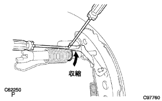

パーキングブレーキ ケーブルASSY NO.3 取り付け |
| 1. パーキングブレーキ ケーブルASSY NO.3取り付け |
ボルトで、パーキングブレーキ ケーブルASSY NO.3をバッキングプレートに取り付ける。
図のように、ボルト6本およびナット1個で、パーキングブレーキ ケーブルASSY No.3の各ケーブルブラケットを取り付ける。

| 2. パーキングブレーキ ケーブルASSY NO.3接続 |
パーキングブレーキケーブルASSY Ｎｏ．３をパーキングブレーキケーブルイコライザに接続する。
| 3. バッキングプレートグリース塗布 |
 |
バッキングプレートとリヤブレーキシューASSYとの接触部に、ノンメルトルブを塗布する。
| 4. ブレーキシュー(リヤ)取り付け |
ニードルノーズプライヤを使用して、パーキングブレーキシューレバーLHをパーキングブレーキケーブルNo.3に取り付ける。
 |
SSTを使用して、ブレーキシュー(リヤ)をリヤブレーキシューホールドダウンスプリングカップ、リヤブレーキシューホールドダウンスプリングおよびリヤブレーキシューホールドダウンスプリングピンで取り付ける。
リヤブレーキシューリターンスプリングをブレーキシュー(リヤ)に取り付ける。
| 5. リヤブレーキオートマチックアジャスト レバー LH取り付け |
 |
リヤブレーキオートマチックアジャストレバーLHおよびリヤブレーキオートマチックアジャストレバートーションスプリングをブレーキシュー(フロント)に取り付ける。
| 6. ブレーキシュー(フロント)取り付け |
パーキングブレーキシューストラットセットLHをブレーキシュー(フロント)に取り付ける。
ブレーキシュー(フロント)をリヤブレーキシューリターンスプリングに接続する。
 |
SSTを使用し、リヤブレーキシューホールドダウンスプリングカップ、リヤブレーキシューホールドダウンスプリングおよびリヤブレーキシューホールドダウンスプリングピンで、ブレーキシュー(フロント)を取り付ける。
SSTを使用し、テンションスプリングをブレーキシュー(リヤ)に取り付ける。
| 7. リヤドラムブレーキ取り付け点検 |
各部品が正常に取り付けられていることを点検する。
| 8. ブレーキドラムとライニングのすき間調整 |
 |
バッキングプレートのサービスホールからマイナスドライバーでアジャスターを回して拡張させ、ブレーキシューASSYをリヤブレーキドラムに接触させる。
|  |
マイナスドライバーでリヤブレーキオートマチックアジャストレバーLHを押しながらもう1本のマイナスドライバーでアジャスターを回して収縮させる。
ブレーキシューASSYがリヤブレーキドラムに接触しなくなった状態から更にアジャスターを1/2回転させて収縮させる。
| 9. リヤブレーキ ドラム取り付け |
| 10. リヤタイヤ取り付け |
| 11. ワイヤアジャスティング ナット NO.1仮締め |
 |
パーキングブレーキワイヤアジャスティングナット Ｎｏ．１および、ロックナットを仮締めする。
| 12. フロントフロアサイレンサ パッドSUB-ASSY RR RH取り付け |
| 13. フロア ボード NO.1取り付け |
クリップ2個のかん合を合わせ、フロアボードNo.1を取り付ける。
| 14. フロントフロア カーペットASSY FR取り付け |
| 15. サイドNO.1 トリムASSY RH取り付け |
 |
クリップおよびツメをかん合させサイドNo.1トリムASSYを取り付ける。
| 16. フロントシート アウタベルトASSY RH取り付け（フロアアンカ部） |
ボルトで、フロントシートアウタベルトASSY RHのフロアアンカ部を取り付ける。
| 17. ラップベルト アウタアンカ カバー取り付け |
 |
ツメのかん合を合わせ、ラップベルト アウタアンカ カバーを取り付ける。
| 18. リヤシート 3ポイントタイプ ベルトASSY OUT RH取り付け（フロアアンカ部） |
ボルトでリヤシート 3ポイントタイプ ベルトASSY OUT RH（フロアアンカ部）を締め付ける。
| 19. フロントドア オープニングトリム ウェザストリップ RH取り付け |
 |
ウェザストリップのペイントマーク(白色、どちらか1箇所)を合わせ、フロントドアオープニングトリムウエザストリツプRHを取り付ける。
| 20. フロントドアスカッフ プレート RH取り付け |
 |
スカッフプレート前端部および後端部のツメをかん合させる。
ツメをかん合させ、フロントドアスカッフプレートRHを取り付ける。
| 21. フロントシートASSY RH取り付け |
シートトラックアジャスティングハンドルを操作してフロントシートASSYをスライドさせ、フロントモーストにする。
シートASSYを車両に乗せ、フロントシートレッグASSY RH部のピンと車両側の穴を合わせる。
車両側ワイヤハーネスとシート側ワイヤハーネスを接続させる。
ボルト2本でシートASSYのリヤ側を仮締めする。
シートトラックアジャスティングハンドルを操作してフロントシートASSYをスライドさせ、リヤモーストにする。
ボルト2本でシートASSYのフロント側を仮締めする。
シートトラックアジャスティングハンドルを操作してフロントシートASSYをスライドさせ、フロントモーストにする。
シートASSYのリヤ側のボルト2本ををインナ→アウタの順に締め付ける。
シートトラックアジャスティングハンドルを操作してフロントシートASSYをスライドさせ、リヤモーストにする。
シートASSYのフロント側のボルト2本をインナ→アウタの順に締め付ける。
フロントシートレッグカバーのツメをかん合させる。
| 22. リヤシートクッションASSY取り付け（リヤシート分割可倒式） |
リヤシートクッションASSY前側をリヤシート クッション ロック ストライカにロックさせる。
リヤシートベルトを、リヤシートクッションカバー & パッド後部のゴムバンドに通す。
 |
ボルトで、リヤシートヒンジLHを取り付ける。
リヤシートバックヒンジＲＨにスナップリングを取り付ける。
リヤシートヒンジRHを、リヤシートクッションASSY右側ブラケットの角パイプに挿入する。
| 23. リヤシートバックASSY LH取り付け（リヤシート分割可倒式） |
ボルト2本でリヤシートバックを取り付ける。
 |
クリップ2個を取り付ける。
| 24. リヤシートバックASSY RH取り付け（リヤシート分割可倒式） |
ボルト2本でリヤシートバックを取り付ける。
クリップ2個を取り付ける。
| 25. リヤシートバック ヒンジSUB-ASSY RH取り付け（リヤシート一体可倒式） |
 |
ボルトで、リヤシートバツクヒンジRHを締め付ける。
| 26. リヤシートバック ヒンジSUB-ASSY LH取り付け（リヤシート一体可倒式） |
ボルトで、リヤシートバツクヒンジLHを締め付ける。
| 27. リヤシートクッションASSY取り付け（リヤシート一体可倒式） |
リヤシートクッションASSY後部のフックをかん合させる。
リヤシートベルトを、リヤシートクッションカバー & パッド後部のゴムバンドに通す。
 |
リヤシートクッションASSY前部のフックをかん合させる。
| 28. リヤシートバックASSY取り付け（リヤシート一体可倒式） |
ボルト2本をでリヤシートバックASSYを取り付ける。
 |
クリップ2個を取り付ける。
| 29. エアバッグウォーニングランプ点検 |
参照| 30. パーキングブレーキペダル踏みしろ点検 |
パーキングブレーキペダルをゆっくり踏み、作動音を数える。
| 31. パーキングブレーキペダル踏みしろ調整 |
 |
パーキングブレーキペダルを一度強く踏む。
パーキングブレーキペダルを再度踏み込み、ロックを解除する。
パーキングブレーキペダル部のロックナットをゆるめ、踏みしろが基準値になるようアジャスティングナットを回して調整する。
アジャスティングナットを固定し、ロックナットを締め付ける。
パーキングブレーキペダルを1回以上操作した後、踏みしろを確認する。
パーキングブレーキの引きずりがないことを確認する。
パーキングブレーキペダルを操作したとき、ブレーキインジゲータランプが点灯することを確認する。